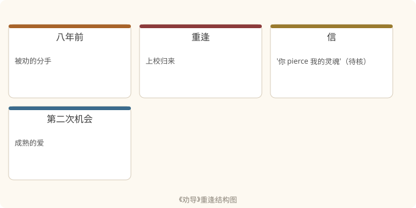

劝导
一、基本信息
| 作者 | 奥斯汀 |
|---|---|
| 成书/出版 | 1817年身后出版（作者页 B037/B012 口径：劝导（1817身后）） Jane Austen — Encyclopaedia Britannica（百科全书） |
| 国别/地区 | 英国 |
| 时代 | 近代 · 19世纪初 |
| 体裁 | 长篇小说 |
| 语言 | 英语 |

《劝导》重逢结构图（主题·结构图）
二、创作背景
作者页（B037/B012）：奥斯汀 major_works 载'劝导（1817身后）'——与《诺桑觉寺》身后合刊（B037 作者页定位，详见 aoman/aima 条核对）。
题材（通说待核）：安妮·艾略特八年后的重逢——'劝导'的悔与第二次机会。
三、内容脉络
安妮八年前被劝退婚；温特沃斯上校归来（通说待核）。
'信'的告白：'你 pierce 我的灵魂'（名句通说待核）。
四、主要人物表
| 人物 | 身份 | 说明 |
|---|---|---|
| 安妮·艾略特 | heroine | 27岁的安静者（通说待核） |
| 温特沃斯上校 | 海军上校 | 归来者（通说待核） |
五、主题与艺术特点
- '劝导'的双刃：听谁的劝（通说）。
- 迟来的第二次机会（通说）。
- 奥斯汀最后的成熟笔法（通说待核）。
六、影响与评论
- 作者页：奥斯汀身后出版的小说（B037/B012 作者页口径）。
Jane Austen — Encyclopaedia Britannica（百科全书） - 与《傲慢与偏见》《爱玛》并列三大代表作（通说待核）。
Jane Austen — Encyclopaedia Britannica（百科全书）
七、阅读建议
难点
- 摄政时代的海军背景。
- 内敛的心理笔法。
- 《劝导》（人民文学出版社/译林出版社版本，通说待核）。
- 英文原版（公有领域）。
奥斯汀收官之作。
八、待核实
- 1817年12月（John Murray，与《诺桑觉寺》合刊）核对。
- 安妮/温特沃斯人名核对。
- 告白信原文核对。